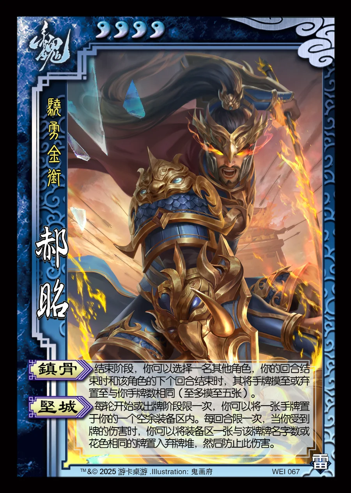

点击卡面查看大图
魏
郝昭
♥4骁勇金衔
镇骨
结束阶段，你可以选择一名其他角色，你的回合结束时和该角色的下个回合结束时，其将手牌摸至或弃置至与你手牌数相同（至多摸至五张）。
坚城
每轮开始或出牌阶段限一次，你可以将一张手牌置于你的一个空余装备区内。每回合限一次，当你受到牌的伤害时，你可以将装备区一张与该牌牌名字数或花色相同的牌置入弃牌堆，然后防止此伤害。

点击卡面查看大图
骁勇金衔
结束阶段，你可以选择一名其他角色，你的回合结束时和该角色的下个回合结束时，其将手牌摸至或弃置至与你手牌数相同（至多摸至五张）。
每轮开始或出牌阶段限一次，你可以将一张手牌置于你的一个空余装备区内。每回合限一次，当你受到牌的伤害时，你可以将装备区一张与该牌牌名字数或花色相同的牌置入弃牌堆，然后防止此伤害。